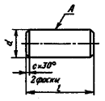
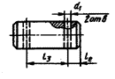
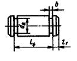
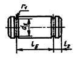
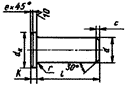
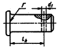
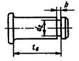
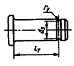

Оси
Содержание:
Оси (по ГОСТ 9650-80).Типы, конструкции и размеры
Оси (по ГОСТ 9650-80).Типы, конструкции и размеры
Оси предназначены для соединений в механизмах общего назначения. Оси изготавливают гладкие и с буртиком. Допускается изготовление осей с углублением на торце или сквозным отверстием, концентричным наружной цилиндрической поверхности.
Размеры, мм
| Тип 1  |
Тип 2 (под шплинт)  |
Тип 3 (под замковую шайбу)  |
Тип 4 (под запорное кольцо)  |
| Тип 5  l3=l-2le; l4=l-2l1; l5=l-2l2; |
Тип 6 (под шплинт)  |
Тип 7 (под замковую шайбу)  |
Тип 8 (под запорное кольцо)  |
| d (поле допуска f8, h8, f9, all, cll, dll, hll, h12, b12) |
d1 | le | d2 | l1 | b | d3 | l2 | r1 | dk | K | r | e | c | |||||
|---|---|---|---|---|---|---|---|---|---|---|---|---|---|---|---|---|---|---|
| нор- маль- ный |
уве- ли- чен- ный |
Но- ми- нал |
От- кло- нение |
нор- маль- ный |
уве- ли- чен- ный |
нор- маль- ный |
уве- ли- чен- ный |
|||||||||||
| 5 6 8 10 11 12 14 16 18 20 22 24 27 (28) 30 33 36 40 45 50 |
1,2 1,6 2,0 3,2 3,2 3,2 4,0 4,0 5,0 5,0 5,0 6,3 6,3 6,3 8,0 8,0 8,0 8,0 10,0 10,0 |
4 4 5 5 5 5 5 5 6 6 6 6 6 6 8 8 8 8 10 10 |
– – – – – 5,5 6,0 6,0 7,0 8,0 8,0 9,0 9,0 9,0 10 10 10 10 12 12 |
-4 4 8 – 8 10 10 14 14 18 – – 20 24 – 28 32 36 40 |
1,5 1,5 1,5 2,5 – 2,5 3,0 3,0 3,0 3,0 3,5 – – 3,5 4,5 – 5,0 5,0 5,0 5,5 |
1,5 1,5 1,5 1,5 – 1,5 2,0 2,0 2,0 2,0 2,5 – – 2,5 2,5 – 3,0 3,0 3,0 3,5 |
– 5,6 7,6 9,6 – 11,4 13,4 15,0 17,0 18,8 20,8 – – 26,8 28,8 – – – – – |
– -0,1 -0,1 -0,1 – -0,1 -0,1 -0,1 -0,1 -0,2 -0,2 – – -0,2 -0,2 – – – – – |
– 3 3 4 – 4 5 5 5 5 6 – – 6 8 – – – – – |
– 0,4 0,4 0,4 – 0,6 0,6 1,0 1,0 1,2 1,2 – – 1,2 1,2 – – – – – |
8 10 12 14 15 16 18 20 22 25 28 30 36 36 38 40 45 50 55 60 |
– – 14 18 – 20 22 25 28 30 33 36 40 40 44 47 50 55 60 66 |
1,5 2,0 2,0 2,5 2,5 2,5 3,0 3,0 3,0 4 4 4 5 5 5 6 6 6 7 7 |
– – 3,0 4,0 4,0 4,0 4,0 4,5 5,0 5,0 5,5 6,0 6,0 6,0 8,0 8,0 8,0 8,0 9,0 9,0 |
0,6 0,6 0,6 0,6 0,6 0,6 0,6 0,6 1,0 1,0 1,0 1,0 1,0 1,0 1,0 1,0 1,6 1,6 1,6 1,6 |
0,6 0,6 0,6 0,6 0,6 0,6 0,6 0,6 0,6 1,0 1,0 1,0 1,0 1,0 1,0 1,6 1,6 1,6 2,5 2,5 |
0,6 0,6 0,6 1,0 1,0 1,0 1,6 1,6 1,6 1,6 1,6 1,6 1,6 1,6 1,6 2,5 2,5 2,5 2,5 2,5 |
|
| Длина l при d, мм | ||||||||||||||||||
|---|---|---|---|---|---|---|---|---|---|---|---|---|---|---|---|---|---|---|
| 5 | 6 | 8 | 10 | 12 | 14 | 16 | 18 | 20 | 22 | 24 | 27 | (28) | 30 | 33 | 36 | 40 | 45 | 45 |
| 10 12 14 16 18 20 22 (25) 28 30 32 35 (36) 40 45 50 |
12 14 16 18 20 22 (25) 28 30 32 (36) 40 45 50 55 60 |
16 18 20 22 (25) 28 30 32 (36) 40 45 50 55 60 65 70 75 80 |
20 22 (25) 28 30 32 (36) 40 45 50 55 60 65 70 75 80 85 90 95 100 |
22 (25) 28 30 32 (36) 40 45 50 55 60 65 70 75 80 85 90 95 100 105 110 115 120 |
(25) 28 30 32 (36) 40 45 50 55 60 65 70 75 80 85 90 95 100 105 110 115 120 130 140 |
(25) 28 30 32 (36) 40 45 50 55 60 65 70 75 80 85 90 95 100 105 110 115 120 130 140 150 160 |
32 (36) 40 45 50 55 60 65 70 75 80 85 90 95 100 105 110 115 120 130 140 150 160 170 180 |
32 (36) 40 45 50 55 60 65 70 75 80 85 90 95 100 105 110 115 120 130 140 150 160 170 180 190 200 210 220 240 250 260 280 300 |
45 50 55 60 65 70 75 80 85 90 95 100 105 110 115 120 130 140 150 160 170 180 190 200 210 220 240 250 260 280 300 |
(36) 40 45 50 55 60 65 70 75 80 85 90 95 100 105 110 115 120 130 140 150 160 170 180 190 200 210 220 240 250 260 280 300 |
55 60 65 70 75 80 85 90 95 100 105 110 115 120 130 140 150 160 170 180 190 200 210 220 240 250 260 280 300 |
45 50 55 60 65 70 75 80 85 90 95 100 105 110 115 120 130 140 150 160 170 180 190 200 210 220 240 250 260 280 300 |
55 60 65 70 75 80 85 90 95 100 105 110 115 120 130 140 150 160 170 180 190 200 210 220 240 250 260 280 300 |
65 70 75 80 85 90 95 100 105 110 115 120 130 140 150 160 170 180 190 200 210 220 240 250 260 280 300 |
70 75 80 85 90 95 100 105 110 115 120 130 140 150 160 170 180 190 200 210 220 240 250 260 280 300 |
75 80 85 90 95 100 105 110 115 120 130 140 150 160 170 180 190 200 210 220 240 250 260 280 300 |
80 85 90 95 100 105 110 115 120 130 140 150 160 170 180 190 200 210 220 240 250 260 280 300 |
90 95 100 105 110 115 120 130 140 150 160 170 180 190 200 210 220 240 250 260 280 300 |
(Размеры, указанные в скобках, применять не рекомендуется).
ГОСТ 9650-80 распространяется на оси диаметром d=3÷100 мм и длиной l=6÷300 мм. Отношение ld не более 15.
Пример обозначения оси типа 1 диаметром d=20 мм с полем допуска h8,длиной l=55 мм из стали Ст3сп без термообработки и без покрытия:
Ось 1-20h8х55. Ст3сп ГОСТ 9650-80.
То же, типа 2 из стали 40Х с цинковым покрытием толщиной 15 мкм:
Ось 2-20h8х55. Ц15 ГОСТ 9650-80.
То же, типа 6 с увеличенным буртиком диаметром dk из стали 20 с цементацией на глубину 0,8-1,5 мм, с твердостью 57…63 HRCэ, с окисным покрытием по ГОСТ 9.306-85:
Ось 6-20h8х55.Л.20.4.0,8-1,5.57…63. Хим. Окс. ГОСТ 9650-80.
Оси изготавливают из стали по ГОСТ 380-94, 1050-88, 45-71, 5632-72, 1414-75, 10702-78. Предпочтительная твердость сталей 125…245 НВ.
Вид покрытия – по ГОСТ 9.303-84, 9,306-85, 9.301-86.
Параметры шероховатости Ra цилиндрических поверхностей осей в зависимости от диаметра d и полей допусков, мкм, не более:
| d, мм | Для полей допусков | ||
| f8, h8, f9 | all, cll, dll, hll | h12, b12 | |
| 3-10 11-50 55-100 |
2,5 (10) 2,5 (10) 5,0 (20) |
2,5 (10) 5,0 (20) 5,0 (20) |
5 (20) 10 (40) 10 (40) |
Примечание. В скобках указаны значения параметра шероховатости Rz; применение параметра Ra предпочтительно.
Допуски пересечения оси отверстия d1 относительно оси поверхности А (в радиусном выражении):
| d, мм | До 10 | Св.10 до 18 |
Св.18 до 30 |
Св.30 до 50 |
Св.50 |
| Допуски, мм |
0,25 | 0,30 | 0,40 | 0,50 | 0,60 |
Допуски торцового биения поверхности Г относительно поверхности А:
| d, мм | До 10 | Св.10 до 18 |
Св.18 до 30 |
Св.30 до 50 |
Св.50 |
| Допуски, мм |
0.06 | 0.10 | 0.12 | 0.16 | 0.25 |
Допуски соосности поверхности В относительно поверхности А (в радиусном выражении):
| d, мм | До 10 | Св.10 до 18 |
Св.18 до 30 |
Св.30 до 50 |
Св.50 |
| Допуски, мм |
0,25 | 0,40 | 0,60 | 0,85 | 1,00 |
Допускается изготовлять оси с закруглением на конце стержня радиусом, равным размеру фаски с, и на наружном диаметре буртика – с радиусом, равным размеру фаски е.